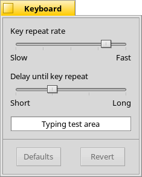
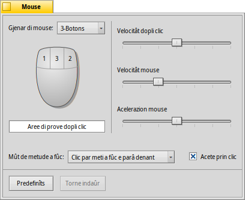
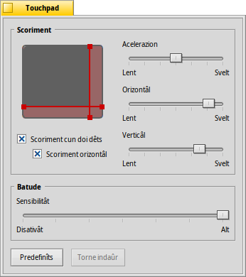

| Tabele |
|
Tastiere Mouse Touchpad |
 Input
Input
| Deskbar: | ||
| Posizion: | /boot/system/preferences/Input | |
| Impostazions: | ~/config/settings/Keyboard_settings ~/config/settings/Mouse_settings ~/config/settings/Touchpad_settings |
Lis preferencis di Input a metin adun i vecjos panei pe tastiere, pal mouse e pal touchpad, plui cualsise altri dispositîf di input ricognossût dal sisteme. I dispositîfs a vegnin listâts a çampe, invezit il panel di diestre al cambie daûr des impostazions disponibilis pal dispositîf selezionât.
 Tastiere
Tastiere

Stabilìs la velocitât di ripetizion e il timp di spiete che dopo di chel, par vie di un tast tignût fracât, al fâs partî la ripetizion. Tu puedis provâ lis tôs impostazions tal cjamp di test in bas.
| al torne a puartâ dut ai valôrs predefinîts. | ||
| al puarte indaûr aes impostazion che a jerin ativis cuant che si à inviât lis preferencis de Tastiere. |
Mouse

Prime tu stabilissis il to gjenar di mouse: 1, 2 o 3 botons dal mouse. Tu puedis simulâ il secont boton dal mouse (=diestre) tignint fracât CTRL intant che tu fasis clic cun chel di çampe. Pal tierç boton dal mouse (=centrâl), si fâs CTRL ALT e clic di çampe.
Tu puedis sestâ i botons dal mouse fasint clic su di lôr e sielzint il lôr gnûf significât dal menù a tende.
Cui cursôrs a diestre, tu justis la velocitât dal dopli-clic, la velocitât dal mouse a la acelerazion. La aree di prove sot dal dissen dal mouse e pues jessi doprade par controlâ se la velocitât dal dopli-clic ti plâs: se fasint un dopli-clic suntune peraule, chê no ven selezionade, alore al è stât metût masse veloç (opûr tu ti varâs di abituâ a fâ clic plui di corse...).
Si à trê che a determinin ce mût che i barcons a rispuindin ai clic:
| Cheste e je la impostazion predefinide: tu fasis clic suntun barcon e chel al cjape la focalizazion e lu pare sù denant di chei altris. | ||
| Fasint clic suntun barcon i da nome la focalizazion, ma no lu tirarà sù denant in automatic. Par fâlu, tu âs di fâ clic su la sô lenghete dal titul o tal ôr dal barcon opûr fasint clic intant che tu tegnis fracât i tascj di gjestion dai barcons CTRL ALT. | ||
| Il barcon sot dal pontadôr dal mouse al cjape in automatic la focalizazion. Però par parâlu sù denant di chei altris si à di fâ come che al è stât descrit inte modalitât . |
Ativant ti sparagne il fat di vê prime di meti a fûc un barcon inatîf par podê ativâ e doprâ i varis widget di chel barcon, come par esempli un boton o un menù. Ma chest, par esempli, al puarte a riscjâ di sierâ par erôr un barcon, scliçant cence volê il boton par sierâ intant che si cîr di smirâ la schede dal barcon. Di chê altre bande però al sveltìs une vore lis operazions.
Dutis lis impostazions a vegnin aplicadis daurman.
| al torne a puartâ dut ai valôrs predefinîts. | ||
| al puarte indaûr aes impostazion che a jerin ativis cuant che si à inviât lis preferencis dal mouse. |
Touchpad

Strissinant lis riis rossis, chê verticâl o chê orizontâl, su pe rapresentazions dal touchpad, tu stabilissis la aree di scoriment (un pêl plui rosse rispiet ae aree di contat gjenerâl grise). Spostant il to dêt in chê part dal touchpad tu spostarâs lis sbaris di scoriment di un barcon, orizontâls o verticâls daûr dal câs.
A diestre a son i cursôrs par stabilî set la acelerazion di scoriment gjenerâl e la velocitât di scoriment orizontâl e verticâl.
La configurazion de acelerazion e decît trop svelte che une liste e scor se tu scoris la aree une vore veloç (par intindisi, lassant stâ il contignût). Lis velocitâts di scoriment a controlin a velocitât gjenerâl cuant che si dopre la aree di scoriment in maniere “normâl”.
Sot de grafiche dal touchpad a son des caselis di selezion par abilitâ il "Scoriment cun doi dêts" pal scoriment verticâl e orizontâl. Spostâ doi dêts in paralêl in verticâl o orizontâl al spostarà lis sbaris di scoriment di un barcon. Se no altri par me, al funzione miôr cuntun dêt de man drete e un de man çampe.
Se tu ti cjatis miôr a doprâ cheste funzion, tu puedis fâ di mancul de impostazion des areis di scoriment e doprâ invezit dut il touchpad pe normâl navigazion.
In bas si à un altri cursôr par stabilî la sensibilitât de batuçade sul touchpad. Se la tô batude e ven ignorade, aumente la sensibilitât. Se il sisteme al regjistre i clic in continuazion, cuant che invezit dut ce che tu vûs fâ al è spostâ il pontadôr dal mouse, prove a diminuîle.
| al torne a puartâ dut ai valôrs predefinîts. | ||
| al puarte indaûr aes impostazion che a jerin ativis cuant che si à inviât lis preferencis dal touchpad. |
Chi al è un consei che nol è leât aes preferencis dal touchpad, ma al centre cul argoment gjenerâl:
Savevistu che tu puedis strissinâ e molâ doprant il touchpad, al vâl a dî cence doprâ i botons? Al baste fâ un dopli clic cence molâ il dêt dopo vê fat la seconde batuçade. La icone cjapade su e restarà tacade al pontadôr dal mouse e tu podarâs strissinale ator movint il dêt. Molant il dêt la icone e vignarà molade.
Se il to dêt al rive tal ôr dal touchpad intant che tu stâs strissinant une icone, ma il pontadôr dal mouse nol è rivât tal ôr dal schermi, ce mût rivistu a continuâ il strissinament? Apene che tu molis il dêt, la icone e ven molade jù.
In base al to hardware, si à une funzionalitât elegante: al baste lassâ il dêt, cence molâlu, tal ôr dal touchpad. Il pontadôr dal mouse al continuarà a spostâsi cul pilote automatic.